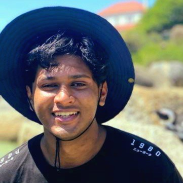

Hi I'm
Yasteel Ramphal
About Me
I'm a passionate Electrical and Software Engineer with a strong background in automation and control systems. My journey in engineering has been driven by curiosity and the desire to create innovative solutions that make a real impact.
With expertise spanning from industrial automation to software development, I bring a unique perspective that bridges hardware and software domains. My interest in embedded systems and hardware-software interfacing allows me to create seamless solutions from circuit board to user interface.
I'm particularly drawn to the cutting-edge fields of machine learning and cybersecurity, where I explore how AI can enhance system intelligence while ensuring robust security protocols. This combination of skills enables me to develop smart, secure, and efficient systems.
I thrive in collaborative environments and enjoy taking on leadership roles that drive projects to success. When I'm not engineering solutions, you'll find me exploring new technologies or planning my next adventure because life's too short not to have fun! 🐒).
Skills & Expertise
Embedded Systems
Hardware-software interfacing, microcontroller programming, and embedded system design with focus on real-time performance.
Software Development
Full-stack development using modern frameworks, with expertise in C++, Python, and web technologies for robust applications.
Machine Learning
AI model development, data analysis, and intelligent system design to create smart, adaptive solutions.
Cybersecurity
Security protocol implementation, threat assessment, and secure system design to protect digital infrastructure.
Automation & Control
Industrial automation systems, PLC programming, and process optimization for enhanced productivity.
Team Leadership
Leading cross-functional teams, project management, and mentoring junior engineers to achieve excellence.
Why Hire Me?
Innovation-Driven Problem Solver
I approach challenges with creative thinking and analytical skills, combining hardware and software expertise to find innovative solutions that bridge multiple domains.
Cutting-Edge Technology Enthusiast
From embedded systems to machine learning and cybersecurity, I'm always eager to learn and implement the latest technologies to stay at the forefront of innovation.
Collaborative Team Player
I excel at working with diverse teams, communicating complex technical concepts clearly, and building consensus around secure, intelligent solutions.
Security & Quality Focused
I don't just deliver functional code—I deliver secure, optimised solutions that work reliably while maintaining the highest standards of cybersecurity.
Full-Stack Versatility
My expertise spans embedded systems, software development, machine learning, and cybersecurity—allowing me to architect complete, intelligent, and secure systems.
Passionate & Adaptive
I bring enthusiasm to every project, whether it's optimising embedded firmware or implementing ML algorithms. Engineering should be both effective and enjoyable!
Let's Build Something Amazing Together
Ready to bring your next project to life? I'm excited to collaborate and create innovative, secure solutions that make a difference.